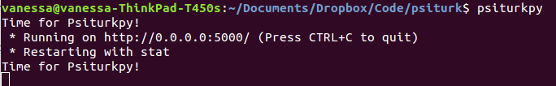
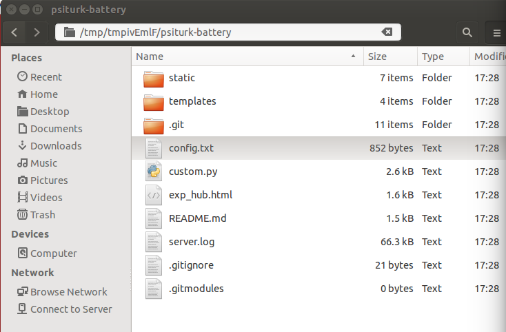

Getting Started¶
I want to generate a custom battery¶
You can generate a battery, meaning a psiturk experiment folder that may include a selection of experiments, on your local machine, a virtual (vagrant) machine, or a cloud (Amazon Web Services) machine.
How do I choose a deployment?¶
If you already have psiturk configured on your local machine and basically want to produce a folder to run, then you should choose the “Folder” option for deployment. If you do not specify database parameters, the default is to generate a sqlite3 file (a static database file in the same folder as your experiment).
If you want to use psiturk but don’t want to install things on your local machine, a vagrant virtual machine would be appropriate. This means that you will ssh into the machine to “see” the folder with your experiment, and all required software and databases will be installed for you. The default IP address you will use to access the virtual machine in your browser is 192.128.0.20.
If you want a deployment that, for example, your lab could use to run many participants at once, you might want to set up psiturk on the cloud, for example, an Amazon Web Services EC2 Instance. If this is this case, we strongly recommend that you do not use the “default” database option, as it could compromise your data - you should enter the database parameters for a secure database that you create.
Battery Generation¶
A battery of experiments is a selection of experimental paradigms that are presented in sequence. In the psiturk experiment infrastructure, a battery would coincide with a single folder that contains a custom setup to run many different tasks for a single HIT. We have made it easy to select one or more experiments from http://www.github.com/expfactory/expfactory-experiments, merge them into a expfactory battery, and deploy in a virtual machine.
0. Install psiturk¶
Before getting started, you should familiarize yourself with [psiturk](https://psiturk.org/quick_start/). Likely you will be interested in setting up an experiment on your local machine, and so you should follow the installation instructions and go through the entire demo to make sure things are working properly.
1. Install expfactory-python¶
expfactory-python is the controller of all pieces of this infrastructure. You can install it with pip:
pip install git+git://github.com/expfactory/expfactory-python.git
This will install the module so that you can use its functions in your own scripts, for example:
from expfactory.battery import generate
and also place an executable, psyturkpy in your bin folder.
2. Web interface to design experiment¶
To run the executable to open up a web interface to design your experiment:
expfactory
You will see that it tells you that it is running at port 5000:
The Experiment Factory Web Interface¶
This means that you should open your browser to localhost:5000. The web interface will take you through the following steps:
- collection of experiment details
- database connection parameters
- selection of local (folder) experiment, or deployment to AWS.
- selection of experiments
A. Collection of experiment details¶
An experiment is controlled via a config.json file, in which you specify details of your experiment. Here we will collect those fields:

All fields are required. Specifically:
- Title: should be the title of your experiment.
- Description: should describe what your experiment is measuring, or its goals.
- Keywords: should be lower-case, comma separated
- Contact: should be a valid email for psiturk to contact only on error
- Organization Name: is typically your institution or university
B. Database connection parameters¶
If you don’t know anything about databases, you should let expfactory set up the database for you. In the case of a local folder, this will mean an sqlite3 file. In the case of a virtual machine or cloud (AWS) deployment, expfactory will configure a mysql database on the same server.

If you are testing, we recommend that you let expfactory set it up for you. For an actual deployment, and especially a cloud deployment, it is essential that you specify custom MySQL or Postgresql database parameters. Letting expfactory set up a cloud deployment means that the connection parameters are available for all to see, and this is a risk to your data and to the privacy of your participants.
Finally, we do not allow for the option of an sqlite3 database beyond a local folder, because sqlite3 can only handle one read/write at a time, and thus is only appropriate for single-user, local testing. When setting up a database, example parameters are shown below:

Psiturkpy does not test these parameters for you.
C. Deployment¶
You have several deployment options, including a local folder, a virtual machine (vagrant), or a cloud deployment (Amazon Web Services, or AWS).

Choosing “folder” will generate a local experiment, and either of the virtual machine options will produce a Vagrantfile that can be run to deploy the Virtual Machine. Specific instructions for a local vagrant or vagrant-aws are provided. Note that you can use the VagrantfileLocal or VagrantfileAWS file (renamed to Vagrantfile) as is from the virtual machine repo to generate a battery with all available, valid experiments.
D. Experiment selection¶
When you click “Next” on part C above, behind the scenes the battery and experiment folders are downloading, and the most updated set of experiments are run through a validator. In this experiment selection screen, you are presented with experiment folders from http://www.github.com/expfactory/expfactory-experiments repo that pass validation:

You can select as many or as few as you want, and they will be included in your custom battery. Note that in the future you will be able to select experiments based on task or concept from the cognitive atlas.
After experiment selection, your battery generation is complete, and the web interface will tell you where you can find the folder or Vagrantfile:

In the case of a “folder” generation, you will see a standard psiturk experiment structure:
We recommend you move this folder to where you would like to keep it, and then cd to the folder, and type psiturk to start the experiment. Note that this assumes that you have properly installed psiturk on your machine. If not, please return to these instructions.
In the case of a “vagrant” or “AWS” configuration, you will find a Vagrantfile in the output folder:

Vagrant Deployment¶
One of the options is to produce a “Vagrantfile” for use on your local machine. This is ideal if you want to use psiturk locally, but don’t want to go through installation of the module or a database.
Setting up a local VM¶
- Install VirtualBox from https://www.virtualbox.org/wiki/Downloads
- Install Vagrant from http://www.vagrantup.com/downloads. Vagrant is a provisioning system that sets up the virtual machine.
- If you don’t already have it, install git https://git-scm.com/downloads
- You have two options to produce your Vagrantfile. If you want a custom battery, then you should run the executable expfactory, generate the file, and copy it to a folder outside of a the temporary directory. If you want to generate a vagrant machine with all valid tasks available, then you can clone the expfactory-vm repo and use the file “VagrantfileLocal” renamed to “Vagrantfile.” Note that this is also the case for the AWS version (instructions below).
cd myvagrantdirectory
git clone https://github.com/expfactory/expfactory-vm.git`
cd expfactory-vm
We are now in a directory with the Vagrantfile. You can set up the virtual machine:
vagrant up
Note that this can take some time. Keep the lookout for red statements that may indicate an error. If you find an error please report it as an issue.

The above shows a successful build.
You can then log in with ssh
vagrant ssh
- Your experiment is located in $HOME/expfactory-battery. The build files are in expfactory-build. Note that when you turn the server on and debug, you will need the -p option to make sure the machine does not attempt to open the link with a browser in the terminal.
cd $HOME/expfactory-battery
psiturk
server on
debug -p
Deployment to AWS¶
You can equivalently produce a Vagrantfile with the expfactory module that can be deployed to AWS. Some expertise is assumed, namely that you are familiar with the EC2 section of the AWS console. You will need to log in and create a security group, download a key, and fill in all variables required in the SCRIPT section of the Vagrantfile.
- Make sure you have the most up-to-date version of vagrant from https://www.vagrantup.com/downloads, and install vagrant-aws. If you do not, you will see this error (version 1.6.5)
vagrant-share can't be installed without vagrant login (RuntimeError)
And after updating:
vagrant --version
Vagrant 1.7.2
2. Then you should install vagrant-aws, which will allow you to provision the Amazon machine.
sudo vagrant plugin install vagrant-aws
Installing the 'vagrant-aws' plugin. This can take a few minutes...
Installed the plugin 'vagrant-aws (0.6.0)'!
You then need to add an aws compatible box. I found this box on the vagrant-aws plugin github repository:
vagrant box add aws https://github.com/mitchellh/vagrant-aws/raw/master/dummy.box
- Fill in your Amazon credentials into the Vagrantfile, then bring up the machine
vagrant up --provider=aws
A few important notes:
- Make sure you mypem.pem file has the correct permissions:
chmod 400 ~/.ssh/myfile.pem
* Many times you will not be able to connect to your machine because the security group input/output is too stringent. Make sure to open ports to allow the default psiturk port to come through (22362) as well as SSH.
I want to view or test available experiments¶
We provide static versions of all experiments, along with meta-data, in our expfactory-experiments github pages.
I want to contribute an experiment¶
All of the experiments that can be selected from http://www.github.com/expfactory/expfactory-experiments can be selected to include in a battery, and you can contribute an experiment.
All of the experiments that can be selected from http://www.github.com/expfactory/expfactory-experiments can be selected to include in a battery, and you can contribute an experiment by submitting a PR to the repo to add a folder with your experiment. More complete details about the format of the config.json file that is required to describe the experiment will come soon. For now, use the other experiments as example.
I want to learn about the expfactory-python functions¶
The generation of the batteries, along with experiment validation, and virtual machine deployment, are controlled by the expfactory-python functions. You can see complete function documentation under Module Index, and we welcome any contributions to the code base via Github pull requests (PRs) or isses.